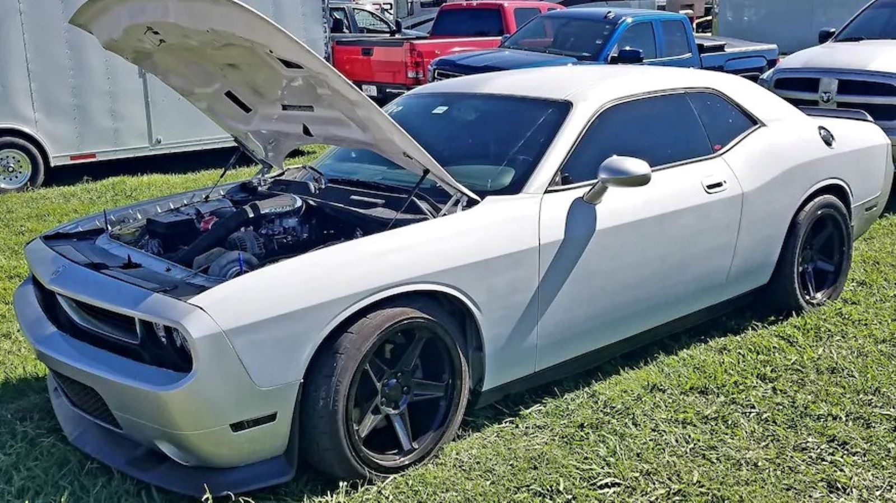
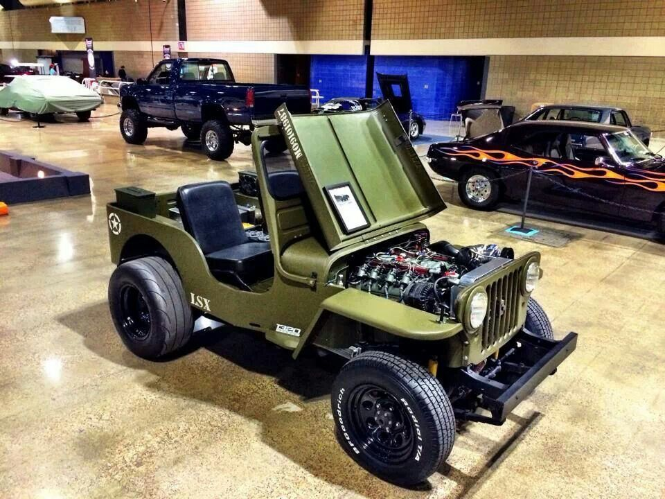
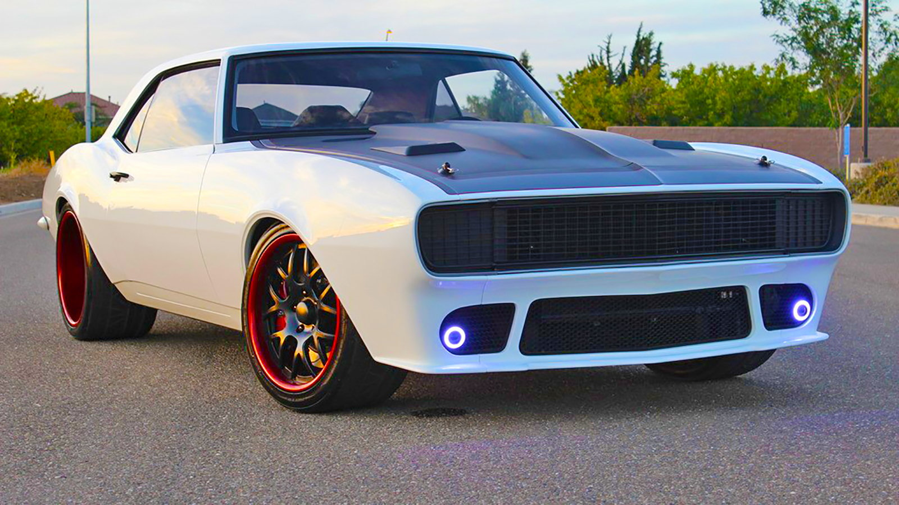
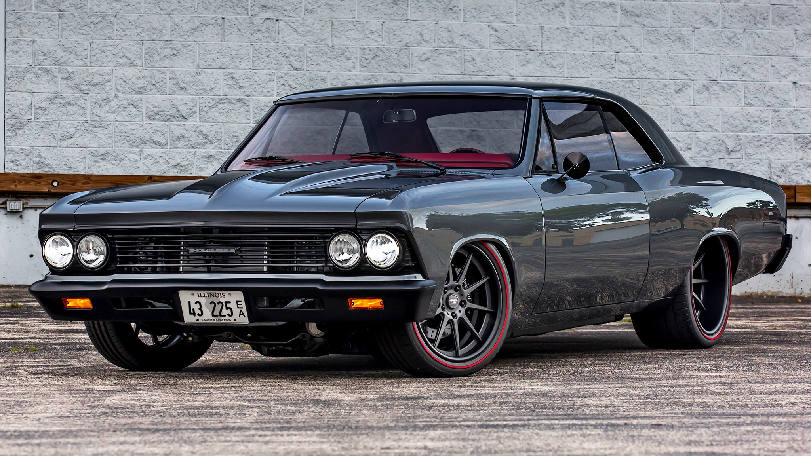
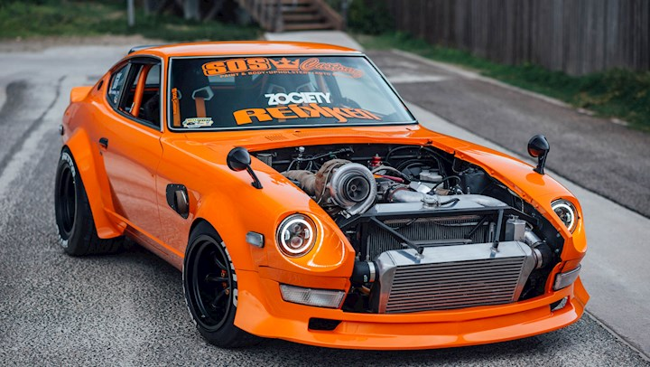
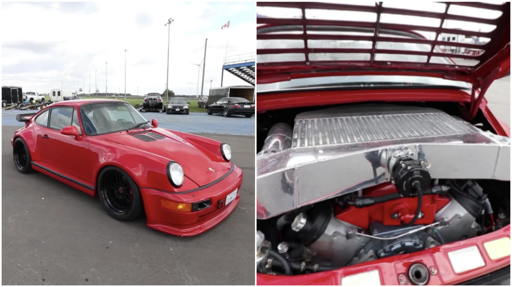
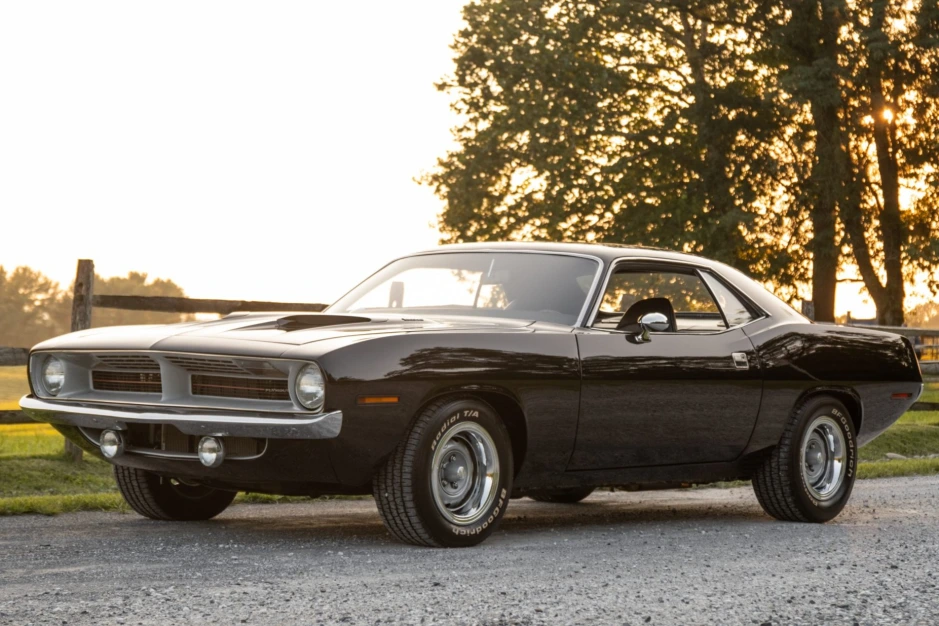
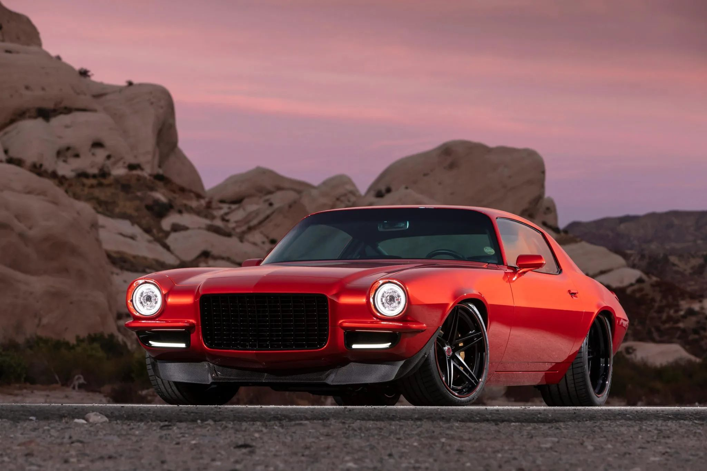
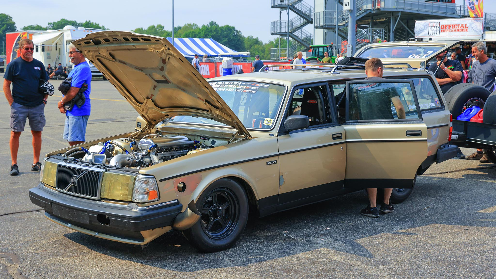
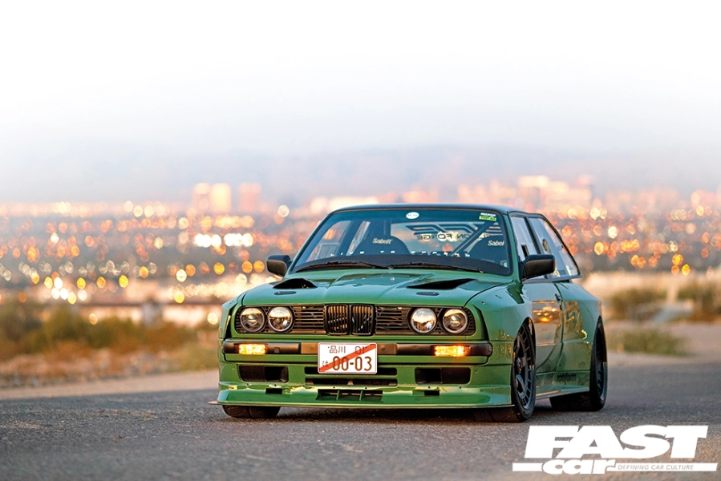

| Ranking | Build Name | Horsepower | Image |
|---|---|---|---|
| 1 | Project White Fang Read More |
1,400 HP |  |
| 2 | LSx Willys Jeep Read More |
1,200 HP |  |
| 3 | Twin Turbo 1967 Camaro Read More |
1,100 HP |  |
| 4 | LS7-Powered 1966 Chevelle Read More |
1,000 HP |  |
| 5 | LSx Datsun 240Z Read More |
900 HP |  |
| 6 | LSx-Powered Porsche 911 Read More |
800 HP |  |
| 7 | LS3-Powered 1970 Cuda Read More |
700 HP |  |
| 8 | LSx 1971 Camaro Read More |
600 HP |  |
| 9 | LS-Powered Volvo 240 Wagon Read More |
500 HP |  |
| 10 | LS1-Swapped BMW E30 Read More |
400 HP |  |